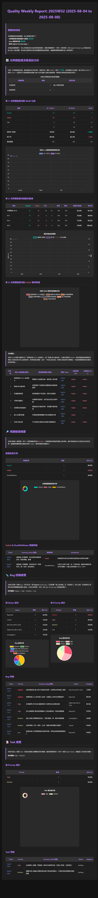
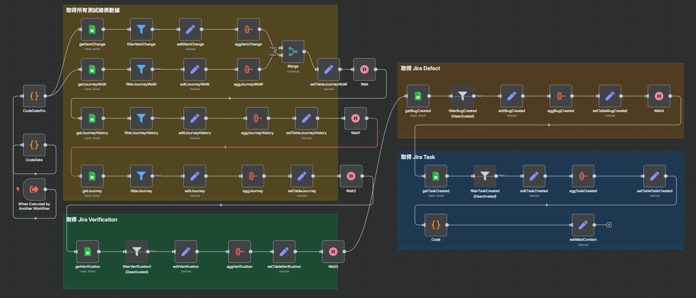
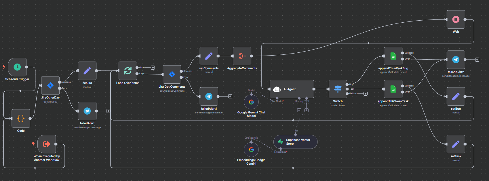

n8n + AI：軟體測試週報全自動生成
一個整合多系統數據、以 AI 驅動的 n8n 自動化報告專案，告別手動複製貼上的夢魘。
項目概述
對於軟體測試團隊而言，製作週報是一項必要但極其繁瑣的任務。數據散落在 Jira、測試案例管理系統、Excel 表格等多個平台，每次都需要花費大量時間進行匯總、統計和製圖。
為了解決這個長期存在的痛點，我設計並實作了一套 n8n 自動化工作流。它能串接所有必要的數據源，利用 AI 進行智慧分析與摘要，最終一鍵生成圖文並茂、格式精美的品質週報，將團隊從重複性的文書工作中解放出來。
核心做法與亮點
-
多源數據自動整合工作流會自動抓取多個 Google Sheets 的測試數據表，並透過 API 連接 Jira，獲取最新的 Defect 與 Task 狀態，無需手動導出。
-
AI 智慧摘要與洞察將匯總的數據交給 AI 進行分析，自動生成對品質狀況的觀察摘要與潛在風險提示，讓報告不僅有數據，更有洞見。
-
精美報告一鍵生成所有數據與圖表最終會被渲染到一個預設的 HTML 模板中，產出排版專業、易於閱讀的週報，甚至比手動製作的更美觀。
-
Webhook 隨時觸發必要時可提供 Webhook 功能，讓團隊成員或主管在任何需要的時候，只需點擊一個連結，即可立即獲取最新的報告，實現真正的「On-Demand Reporting」。
成果展示
點此查看完整互動式 Demo 週報
(已使用 Mock Data 替換，非公司真實資料。)
最終生成的 Mock Data 週報範例
(部分圖表無法截圖呈現，請點上方連結觀看Demo網頁)

主工作流 (Master Workflow)

數據抓取子流 (Data Fetching)
Jira 整合子流 (Jira Integration)
量化效益
-
節省 90% 報告時間 將原來需要 1.5-2 小時的報告製作時間，縮短到幾分鐘內完成。
-
隨時重跑，數據零時差 無需在週末或下班前預先整理，隨時都能獲取截至當下的最新數據。
-
提升數據準確性 自動化流程消除了人工複製貼上可能導致的錯誤，確保報告數據的準確可靠。